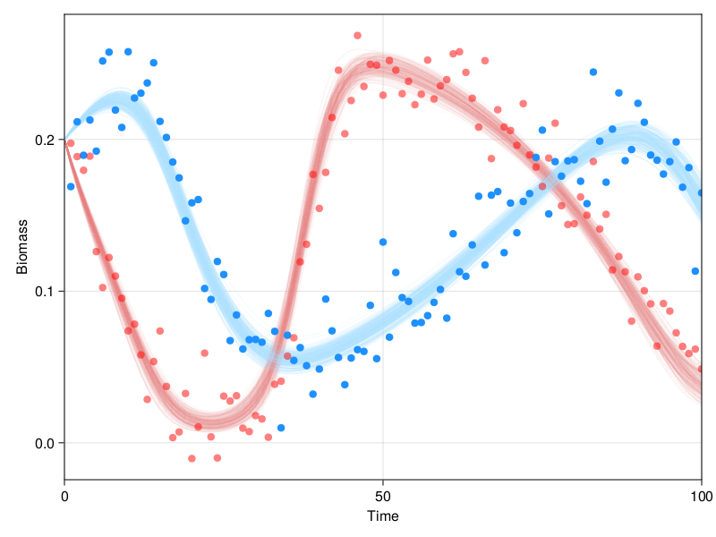

Inferring community dynamics
This use case shows how to build and run a model of community dynamics (the Rosenzweig-MacArthur model, specifically).
using Turing, DiffEqBayes
using DifferentialEquations
using MetacommunityDynamics
using LinearAlgebra
using CairoMakie
┌ Warning: Environment variable CMDSTAN_HOME not set. Use set_cmdstan_home!.
└ @ StanBase ~/.julia/packages/StanBase/EKgLz/src/StanBase.jl:52
The Rosenzweig-MacArthur model is a model of consumer-resource dynamics.
It is described by the equations
$$ \frac{dR}{dt} = \lambda R \bigg(1 - \frac{R}{K}\bigg) - \frac{\alpha CR}{1 +\alpha \eta R} $$
$$ \frac{dC}{dt} = \beta \frac{\alpha CR}{1 + \alpha \eta R} - \gamma C $$
where $R$ is the relative biomass of the resource, $C$ is the relative biomass of the consumer, $\alpha$ is the attack-rate, $\eta$ is the handling type, $\lambda$ is the maximum instric growth rate, $\beta$ is the intrinsic infintesimal growth of biomass for the consumer per unit resource, and $\gamma$ is the intrinsic death date of consumers. Note that this is equivalent to a Lotka-Volterra model with a Holling Type-II functional response.
Let's simulate it ,using only 3 lines of Julia.
First we build the model
rm = RosenzweigMacArthur()
RosenzweigMacArthur{Int64, Float64}([0 1; 0 0], [0.0, 0.5], [0.0 5.0; 5.0 0.0], [0.0 3.0; 3.0 0.0], [0.0 0.5; 0.5 0.0], [0.1, 0.0], [0.0, 0.3])
Then we setup the problem
prob = problem(rm, Deterministic)
MetacommunityDynamics.Problem{SciMLBase.ODEProblem{Vector{Float64}, Tuple{Int64, Int64}, false, Vector{Array{Float64}}, SciMLBase.ODEFunction{false, SciMLBase.AutoSpecialize, MetacommunityDynamics.var"#121#122"{RosenzweigMacArthur{Int64, Float64}}, LinearAlgebra.UniformScaling{Bool}, Nothing, Nothing, Nothing, Nothing, Nothing, Nothing, Nothing, Nothing, Nothing, Nothing, Nothing, Nothing, Nothing, typeof(SciMLBase.DEFAULT_OBSERVED), Nothing, Nothing}, Base.Pairs{Symbol, Union{}, Tuple{}, NamedTuple{(), Tuple{}}}, SciMLBase.StandardODEProblem}}(RosenzweigMacArthur{Int64, Float64}([0 1; 0 0], [0.0, 0.5], [0.0 5.0; 5.0 0.0], [0.0 3.0; 3.0 0.0], [0.0 0.5; 0.5 0.0], [0.1, 0.0], [0.0, 0.3]), SciMLBase.ODEProblem{Vector{Float64}, Tuple{Int64, Int64}, false, Vector{Array{Float64}}, SciMLBase.ODEFunction{false, SciMLBase.AutoSpecialize, MetacommunityDynamics.var"#121#122"{RosenzweigMacArthur{Int64, Float64}}, LinearAlgebra.UniformScaling{Bool}, Nothing, Nothing, Nothing, Nothing, Nothing, Nothing, Nothing, Nothing, Nothing, Nothing, Nothing, Nothing, Nothing, typeof(SciMLBase.DEFAULT_OBSERVED), Nothing, Nothing}, Base.Pairs{Symbol, Union{}, Tuple{}, NamedTuple{(), Tuple{}}}, SciMLBase.StandardODEProblem}(SciMLBase.ODEFunction{false, SciMLBase.AutoSpecialize, MetacommunityDynamics.var"#121#122"{RosenzweigMacArthur{Int64, Float64}}, LinearAlgebra.UniformScaling{Bool}, Nothing, Nothing, Nothing, Nothing, Nothing, Nothing, Nothing, Nothing, Nothing, Nothing, Nothing, Nothing, Nothing, typeof(SciMLBase.DEFAULT_OBSERVED), Nothing, Nothing}(MetacommunityDynamics.var"#121#122"{RosenzweigMacArthur{Int64, Float64}}(RosenzweigMacArthur{Int64, Float64}([0 1; 0 0], [0.0, 0.5], [0.0 5.0; 5.0 0.0], [0.0 3.0; 3.0 0.0], [0.0 0.5; 0.5 0.0], [0.1, 0.0], [0.0, 0.3])), LinearAlgebra.UniformScaling{Bool}(true), nothing, nothing, nothing, nothing, nothing, nothing, nothing, nothing, nothing, nothing, nothing, nothing, nothing, SciMLBase.DEFAULT_OBSERVED, nothing, nothing), [0.2, 0.2], (0, 100), Array{Float64}[[0.0, 0.5], [0.0 5.0; 5.0 0.0], [0.0 3.0; 3.0 0.0], [0.0 0.5; 0.5 0.0], [0.1, 0.0], [0.0, 0.3]], Base.Pairs{Symbol, Union{}, Tuple{}, NamedTuple{(), Tuple{}}}(), SciMLBase.StandardODEProblem()), (0, 100), [0.2, 0.2], missing)
Third we simulate!
traj = simulate(prob)
An trajectory of length 101.
┌────────────────────────────────────────────────────────────────────────────────┐
0.250193 │⠀⠀⠀⠀⠀⠀⠀⠀⠀⠀⠀⠀⠀⠀⠀⠀⠀⠀⠀⠀⠀⠀⠀⠀⠀⠀⠀⠀⠀⠀⠀⠀⡠⠊⠉⠉⠉⠉⠉⠓⠒⠤⢄⡀⠀⠀⠀⠀⠀⠀⠀⠀⠀⠀⠀⠀⠀⠀⠀⠀⠀⠀⠀⠀⠀⠀⠀⠀⠀⠀⠀⠀⠀⠀⠀⠀⠀⠀⠀⠀│
│⠀⠀⠀⠀⣀⠤⠤⠤⣀⠀⠀⠀⠀⠀⠀⠀⠀⠀⠀⠀⠀⠀⠀⠀⠀⠀⠀⠀⠀⠀⠀⡜⠁⠀⠀⠀⠀⠀⠀⠀⠀⠀⠀⠈⠑⠒⠤⣀⡀⠀⠀⠀⠀⠀⠀⠀⠀⠀⠀⠀⠀⠀⠀⠀⠀⠀⠀⠀⠀⠀⠀⠀⠀⠀⠀⠀⠀⠀⠀⠀│
│⠀⡤⠚⠉⠀⠀⠀⠀⠀⠑⢄⠀⠀⠀⠀⠀⠀⠀⠀⠀⠀⠀⠀⠀⠀⠀⠀⠀⠀⠀⡼⠀⠀⠀⠀⠀⠀⠀⠀⠀⠀⠀⠀⠀⠀⠀⠀⠀⠈⠢⢤⡀⠀⠀⠀⠀⠀⠀⠀⠀⠀⠀⠀⠀⠀⠀⠀⠀⠀⠀⠀⠀⠀⠀⠀⠀⠀⠀⠀⠀│
│⠘⡄⠀⠀⠀⠀⠀⠀⠀⠀⠀⠱⡀⠀⠀⠀⠀⠀⠀⠀⠀⠀⠀⠀⠀⠀⠀⠀⠀⢰⠁⠀⠀⠀⠀⠀⠀⠀⠀⠀⠀⠀⠀⠀⠀⠀⠀⠀⠀⠀⠀⠈⠑⠢⣀⠀⠀⠀⠀⣀⠤⠔⠒⠉⠉⠉⠉⠉⠓⠢⣀⠀⠀⠀⠀⠀⠀⠀⠀⠀│
│⠀⠘⡄⠀⠀⠀⠀⠀⠀⠀⠀⠀⠱⡄⠀⠀⠀⠀⠀⠀⠀⠀⠀⠀⠀⠀⠀⠀⠀⡎⠀⠀⠀⠀⠀⠀⠀⠀⠀⠀⠀⠀⠀⠀⠀⠀⠀⠀⠀⠀⠀⠀⠀⠀⠀⢑⣢⡒⠉⠀⠀⠀⠀⠀⠀⠀⠀⠀⠀⠀⠀⠑⢢⠀⠀⠀⠀⠀⠀⠀│
│⠀⠀⠱⡀⠀⠀⠀⠀⠀⠀⠀⠀⠀⠘⣄⠀⠀⠀⠀⠀⠀⠀⠀⠀⠀⠀⠀⠀⢰⠁⠀⠀⠀⠀⠀⠀⠀⠀⠀⠀⠀⠀⠀⠀⠀⠀⠀⠀⠀⠀⠀⠀⡠⠴⠊⠁⠀⠑⠢⡀⠀⠀⠀⠀⠀⠀⠀⠀⠀⠀⠀⠀⠀⠁⠀⠀⠀⠀⠀⠀│
│⠀⠀⠀⠱⡀⠀⠀⠀⠀⠀⠀⠀⠀⠀⠈⢆⠀⠀⠀⠀⠀⠀⠀⠀⠀⠀⠀⠀⡇⠀⠀⠀⠀⠀⠀⠀⠀⠀⠀⠀⠀⠀⠀⠀⠀⠀⠀⠀⠀⡠⠔⠉⠀⠀⠀⠀⠀⠀⠀⠈⠣⢄⠀⠀⠀⠀⠀⠀⠀⠀⠀⠀⠀⠀⠀⠀⠀⠀⠀⠀│
Biomass │⠀⠀⠀⠀⠘⡄⠀⠀⠀⠀⠀⠀⠀⠀⠀⠈⠣⡀⠀⠀⠀⠀⠀⠀⠀⠀⠀⢸⠀⠀⠀⠀⠀⠀⠀⠀⠀⠀⠀⠀⠀⠀⠀⠀⠀⢀⠤⠒⠉⠀⠀⠀⠀⠀⠀⠀⠀⠀⠀⠀⠀⠈⠒⡄⠀⠀⠀⠀⠀⠀⠀⠀⠀⠀⠀⠀⠀⠀⠀⠀│
│⠀⠀⠀⠀⠀⠘⡄⠀⠀⠀⠀⠀⠀⠀⠀⠀⠀⠑⢄⠀⠀⠀⠀⠀⠀⠀⠀⡇⠀⠀⠀⠀⠀⠀⠀⠀⠀⠀⠀⠀⠀⢀⡠⠔⠋⠁⠀⠀⠀⠀⠀⠀⠀⠀⠀⠀⠀⠀⠀⠀⠀⠀⠀⠈⠣⡀⠀⠀⠀⠀⠀⠀⠀⠀⠀⠀⠀⠀⠀⠀│
│⠀⠀⠀⠀⠀⠀⠘⢄⠀⠀⠀⠀⠀⠀⠀⠀⠀⠀⠈⠢⡀⠀⠀⠀⠀⠀⡸⠀⠀⠀⠀⠀⠀⠀⠀⠀⠀⢀⡠⠔⠊⠁⠀⠀⠀⠀⠀⠀⠀⠀⠀⠀⠀⠀⠀⠀⠀⠀⠀⠀⠀⠀⠀⠀⠀⠈⠢⡀⠀⠀⠀⠀⠀⠀⠀⠀⠀⠀⠀⠀│
│⠀⠀⠀⠀⠀⠀⠀⠈⢆⠀⠀⠀⠀⠀⠀⠀⠀⠀⠀⠀⠈⠲⣀⡀⠀⢠⠃⠀⠀⠀⠀⠀⢀⡠⠴⠒⠉⠁⠀⠀⠀⠀⠀⠀⠀⠀⠀⠀⠀⠀⠀⠀⠀⠀⠀⠀⠀⠀⠀⠀⠀⠀⠀⠀⠀⠀⠀⠈⢆⡀⠀⠀⠀⠀⠀⠀⠀⠀⠀⠀│
│⠀⠀⠀⠀⠀⠀⠀⠀⠈⢆⠀⠀⠀⠀⠀⠀⠀⠀⠀⠀⠀⠀⠀⠉⢑⠞⠲⠒⠒⠒⠉⠉⠁⠀⠀⠀⠀⠀⠀⠀⠀⠀⠀⠀⠀⠀⠀⠀⠀⠀⠀⠀⠀⠀⠀⠀⠀⠀⠀⠀⠀⠀⠀⠀⠀⠀⠀⠀⠀⠘⠢⡀⠀⠀⠀⠀⠀⠀⠀⠀│
│⠀⠀⠀⠀⠀⠀⠀⠀⠀⠀⠱⡀⠀⠀⠀⠀⠀⠀⠀⠀⠀⠀⠀⢀⠎⠀⠀⠀⠀⠀⠀⠀⠀⠀⠀⠀⠀⠀⠀⠀⠀⠀⠀⠀⠀⠀⠀⠀⠀⠀⠀⠀⠀⠀⠀⠀⠀⠀⠀⠀⠀⠀⠀⠀⠀⠀⠀⠀⠀⠀⠀⠈⠑⠄⠀⠀⠀⠀⠀⠀│
│⠀⠀⠀⠀⠀⠀⠀⠀⠀⠀⠀⠈⠢⢄⠀⠀⠀⠀⠀⠀⠀⣀⠤⠃⠀⠀⠀⠀⠀⠀⠀⠀⠀⠀⠀⠀⠀⠀⠀⠀⠀⠀⠀⠀⠀⠀⠀⠀⠀⠀⠀⠀⠀⠀⠀⠀⠀⠀⠀⠀⠀⠀⠀⠀⠀⠀⠀⠀⠀⠀⠀⠀⠀⠀⠀⠀⠀⠀⠀⠀│
0 │⠀⠀⠀⠀⠀⠀⠀⠀⠀⠀⠀⠀⠀⠀⠉⠉⠒⠒⠒⠉⠉⠀⠀⠀⠀⠀⠀⠀⠀⠀⠀⠀⠀⠀⠀⠀⠀⠀⠀⠀⠀⠀⠀⠀⠀⠀⠀⠀⠀⠀⠀⠀⠀⠀⠀⠀⠀⠀⠀⠀⠀⠀⠀⠀⠀⠀⠀⠀⠀⠀⠀⠀⠀⠀⠀⠀⠀⠀⠀⠀│
└────────────────────────────────────────────────────────────────────────────────┘
⠀0⠀⠀⠀⠀⠀⠀⠀⠀⠀⠀⠀⠀⠀⠀⠀⠀⠀⠀⠀⠀⠀⠀⠀⠀⠀⠀⠀⠀⠀⠀⠀⠀⠀⠀⠀⠀⠀⠀⠀⠀⠀⠀⠀⠀⠀⠀⠀⠀⠀⠀⠀⠀⠀⠀⠀⠀⠀⠀⠀⠀⠀⠀⠀⠀⠀⠀⠀⠀⠀⠀⠀⠀⠀⠀⠀⠀110⠀
⠀⠀⠀⠀⠀⠀⠀⠀⠀⠀⠀⠀⠀⠀⠀⠀⠀⠀⠀⠀⠀⠀⠀⠀⠀⠀⠀⠀⠀⠀⠀⠀⠀⠀⠀⠀⠀time (t)⠀⠀⠀⠀⠀⠀⠀⠀⠀⠀⠀⠀⠀⠀⠀⠀⠀⠀⠀⠀⠀⠀⠀⠀⠀⠀⠀⠀⠀⠀⠀⠀⠀⠀⠀⠀⠀
obs = observe(Observer(frequency=1), traj)
2×101 Matrix{Float64}:
0.168917 0.211621 0.189579 0.212825 … 0.113174 0.164781 0.17803
0.197501 0.188698 0.17967 0.188943 0.0617687 0.0487167 0.0623812
Inference
First we define our model for inference.
print("Fitting model...")
@model function fit_rm(data, prob)
σ ~ InverseGamma(2,3)
λ ~ TruncatedNormal(0.5,1, 0,1.5)
α ~ Normal(2,3.)
η ~ Normal(2,3.)
β ~ TruncatedNormal(0.5,1,0,1.5)
γ ~ TruncatedNormal(0.5,1,0,1.5)
K ~ TruncatedNormal(0.5,1,0,1.5)
θ = two_species(RosenzweigMacArthur, λ=λ, α=α, η=η, β=β, γ=γ, K=K)
predicted = solve(prob, Tsit5(); p=θ, saveat=1)
for i in eachindex(predicted)
data[:,i] ~ MvNormal(predicted[i], σ^2 * I)
end
end
model = fit_rm(obs, prob.prob)
chain = sample(model, NUTS(0.65), MCMCSerial(), 300, 1)
posterior_samples = sample(chain[[:λ, :α, :η, :β, :γ, :K]], 300)
f = Figure()
ax = Axis(f[1,1], xlabel="Time", ylabel="Biomass")
xlims!(0,100)
for p in eachrow(Array(posterior_samples))
λ, α, η, β, γ, K = p
θ = two_species(RosenzweigMacArthur, λ=λ, α=α, η=η, β=β, γ=γ, K=K)
sol_p = solve(prob.prob, Tsit5(); p=θ, saveat=1)
lines!(ax, sol_p.t, [sol_p.u[i][1] for i in eachindex(sol_p.t)], color=(:lightskyblue1, 0.1))
lines!(ax, sol_p.t, [sol_p.u[i][2] for i in eachindex(sol_p.t)], color=(:lightcoral, 0.04))
end
scatter!(ax, 1:size(obs,2), obs[1,:], color=(:dodgerblue))
scatter!(ax, 1:size(obs,2), obs[2,:], color=(:red, 0.5))
f
